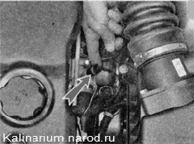
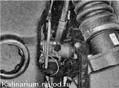
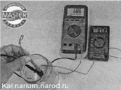

Датчик температуры охлаждающей жидкости - снятие, проверка и установкаДля выполнения работы потребуются: — мультиметр (в режиме вольтметра, омметр с пределом измерения от 100 Ом до 10 кОм); — термометр (с пределом изменения не менее 100 °С); — небольшая термостойкая емкость объемом около 0,5 л для воды; — около 0,3 л воды, разогретой до температуры кипения. Совет Термометр можно заменить цифровым мультиметром с режимом термометра. Снятие и проверка 1. Сливаем охлаждающую жидкость 2. Освобождаем фиксатор колодки жгута проводов, отсоединяем колодку от датчика. 3. Подсоединяем «минусовой» щуп вольтметра к «массе» двигателя. 4. Включив зажигание, вольтметром измеряем напряжение на выводе А колодки жгута проводов (обозначение выводов нанесено на колодке жгута проводов). Напряжение на выводе должно быть не меньше 12 В. Если напряжение не поступает на колодку или оно меньше 12 В, значит, разряжена аккумуляторная батарея, неисправна цепь питания или неисправен ЭБУ По окончании измерения напряжения выключайте зажигание. 5. Торцовым ключом с глубокой головкой на 19 мм отворачиваем датчик температуры и вынимаем его из корпуса термостата. Соединение датчика с термостатом уплотнено медной шайбой. 
6. Подсоединяем омметр к выводам датчика. 8. Заполняем емкость кипятком, погружаем в воду рабочую часть датчика и записываем показания прибора при температуре около 100 °С. По мере остывания воды измеряем сопротивление датчика при температуре 90, 80, 70, 60, 50, 45, 40, 35, 30, 25 и 20 'С. Если позволяют условия, то снять показания можно и при более низкой температуре. Сопротивление исправного датчика должно быть близко к данным, указанным в таблице:
Неисправный датчик заменяем. Установка 1. Устанавливаем датчик в последовательности, обратной снятию. 2. Заполняем систему охлаждения двигателя жидкостью. 3. Запускаем двигатель и убеждаемся в отсутствии утечек охлаждающей жидкости из-под датчика. При необходимости сильнее заворачиваем датчик в корпус термостата. Если таким способом устранить течь не удалость, следует переустановить датчик, нанеся на его резьбовую часть термостойкий герметик или заменить медную шайбу. |